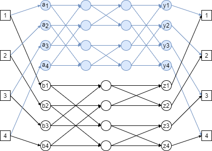

Relations¶
Problem 1¶
Intro
For each of the following, either prove that it is an equivalence relation and state its equivalence classes, or give an example of why it is not an equivalence relation.
a)¶
Question
This is an equivalence class because the following properties hold:
reflexivity: \(x\ mod n\) is the same as \(y\ mod n\)
symmetry: \(x \equiv y\ (mod\ n)\) is the same as \(y \equiv x\ (mod\ n)\)
transitivity: if \(x \equiv y\ (mod\ n)\) and \(y \equiv z\ (mod\ n)\) then \(x \equiv z\ (mod\ n)\)
Below are a summary of the equivalence classes:
b)¶
Question
where P is the set of all people in the world today
This is not an equivalence class because a person cannot be taller than themselves, which violates the property of reflexivity that equivalence classes must hold.
c)¶
Question
Reflexive is true because \(gcd(x, x) = 1\) and gcd(y, y) = 1. Symmetry is true because if \(gcd(x, y) = 1\) then \(gcd(y, x) = 1\), since while applying Euclid’s algorithm the larger term will be swapped to find a remainder. Transitivity is not true, however, because 6 is relatively prime to 7, and 7 is relatively prime to 9, but \(gcd(6, 9) = 3\).
d)¶
Question
\(R_G := \) such that V is the set of vertices of a graph G, and there is a path \(x, v_1, \dots , v_k, y\) from x to y along the edges of G.
Reflexivity holds because by convention a path of length 0 exists from a node to itself. Symmetry holds because if there is a path from x to y, then there is a path from y to x, assuming this is a simple graph and not a directed one. Transitivity holds because if there is a path for x to y, and a path from y to x, there there is at least a path from x to z via y.
Problem 2¶
Intro
Every function has some subset of these properties:
injective
surjective
bijective
Determine the properties of the functions below, and briefly explain your reasoning.
a)¶
Question
The function \(f : \Bbb R \rightarrow \Bbb R\) defined by \(f(x) = x sin(x)\).
Some values of x provide the same result e.g. \(f(0) = 0 \cdot sin(0) = 0\) and \(f(360) = 360 \cdot sin(360) = 0\), so it cannot be injective. Sine is periodic, not every value of \(\Bbb R\) can be calculated, so it is not surjective. Since it is neither injective nor surjective, it cannot be bijective.
b)¶
Question
The function \(f : \Bbb R \rightarrow \Bbb R\) defined by \(f(x) = 99x^{99}\)
A total bijective function, because every value of x corresponds to exactly one value of \(f(x)\).
c)¶
Question
The function \(f : \Bbb R \rightarrow \Bbb R\) defined by \(tan^{−1}(x)\).
An injective function, because while any value of x can be input, not every value of R can be output.
d)¶
Question
The function \(f : \Bbb N \rightarrow \Bbb N\) defined by \(f(x)\) = the number of numbers that divide x. For example, \(f(6) = 4\) because 1, 2, 3, 6 all divide 6. Note: We define here the set \(\Bbb N\) to be the set of all positive integers (1, 2, …).
A total surjective relation. It is total because any positive integer is divisible by at least 1 other integer It is surjective because every possible value for N can be calculated by \(f(x^{n+1})\) It is not injective, because every prime number evalutes to 2, since prime numbers are only divisible by 1 and themselves, which means multiple values produce the same results.
Problem 3¶
Introduction
In this problem we study partial orders (posets). Recall that a weak partial order \(\preceq\) on a set X is reflexive (\(x \preceq x\)), anti-symmetric \((x \preceq y \land y \preceq x \Rightarrow x = y)\), and transitive \((x \preceq y \land y \preceq z \Rightarrow x \preceq z)\). Note that it may be the case that neither \(x \preceq y\) nor \(y \preceq x\). A chain is a list of distinct elements \(x_1, \dots , x_i\) in X for which \(x_1 \preceq x_2 \preceq \dots \preceq x_i\).
An antichain is a subset S of X such that for all distinct \(x, y \in S\), neither \(x \preceq y\) nor \(y \preceq x\).
The aim of this problem is to show that any sequence of \((n − 1)(m − 1) + 1\) integers either contains a non-decreasing subsequence of length n or a decreasing subsequence of length m. Note that the given sequence may be out of order, so, for instance, it may have the form \(1, 5, 3, 2, 4\) if \(n = m = 3\). In this case the longest non-decreasing and longest decreasing subsequences have length 3 (for instance, consider 1, 2, 4 and 5, 3, 2).
a)¶
Question
Label the given sequence of \((n − 1)(m − 1) + 1\) integers \(a_1, a_2, \dots , a_{(n−1)(m−1)+1}\). Show the following relation \(\preceq\) on \(\{1, 2, 3, \dots ,(n − 1)(m − 1) + 1\}\) is a weak poset: \(i \preceq j\) if and only if \(i \le j\) and \(a_i \le a_j\) (as integers).
Per the question, the relation is defined as a non-decreasing sub-sequence. If \(i \le j\) then the \(i^{th}\) index precedes the \(j^{th}\) index. If the number at the \(i^{th}\) position is less than or equal to the number of the \(j^{th}\) position, then the sub-sequence of \((a_i, a_j)\) is non-decreasing.
This relation is reflexive because any integer (referring to either index or item) is equal to itself, so it is also greater than or equal to itself. The relation is anti-symmetric because if \(i \le j\) then i is at least equal to j, and by symmetry the same is true for j, so the only option is that they were equal. The relation is also transitive because sub-sequences do not have to be contiguous.
Intro
For the next part, we will need to use Dilworth’s theorem, as covered in lecture. Recall that Dilworth’s theorem states that if \((X, \preceq)\) is any poset whose longest chain has length n, then X can be partitioned into n disjoint anti-chains.
b)¶
Question
Show that in any sequence of \((n − 1)(m − 1) + 1\) integers, either there is a non-decreasing sub-sequence of length n or a decreasing sub-sequence of length m
Per Dilworth’s theorem, let’s assume that the sub-sequence has a longest chain of \((m - 1)\), then the sequence can be partitioned into \((m - 1)\) disjoint anti-chains.
Consider the integers in the sequence, the first integer is able to start a chain of 1 item. If the second integer is larger than the first, then it is added to a new chain, such that we now have 2 anti-chains. This process continues until we reach the \(((n - 1)(m - 1) + 1)^{th}\) integer, by which point one of two things can happen;
- The \((n - 1)(m - 1) + 1^{th}\) can be added to an existing chain.
In this case we have \((n - 1)(m - 1) + 1\) integers in \((m - 1)\) anti-chains. Therefore at least one of those anti-chains has a length of at least \((n - 1) + 1 = n\), forming a non-decreasing sub-sequence of length n.
- The \((n - 1)(m - 1) + 1^{th}\) is less than the last item of every existing chain.
Therefore the last item of every existing chain and the \(((n - 1)(m - 1) + 1)^{th}\) form a decreasing sub-sequence of length \((m - 1) + 1 = m\).
c)¶
Question
Construct a sequence of \((n − 1)(m − 1)\) integers, for arbitrary n and m, that has no non-decreasing sub-sequence of length n and no decreasing sub-sequence of length m. Thus in general, the result you obtained in the previous part is best-possible.
The sequence, S, has only one item so there are no sub-sequence of length 2 at all, regardless of decreasing or non-decreasing.
Problem 4¶
Introduction
Louis Reasoner figures that, wonderful as the Bene˘s network may be, the butterfly network has a few advantages, namely: fewer switches, smaller diameter, and an easy way to route packets through it. So Louis designs an N-input/output network he modestly calls a Reasoner-net with the aim of combining the best features of both the butterfly and Benes nets:
The \(i^{th}\) input switch in a Reasoner-net connects to two switches, \(a_i\) and \(b_i\), and likewise, the \(j^{th}\) output switch has two switches, \(y_j\) and \(z_j\), connected to it. Then the Reasoner-net has an N-input Benes network connected using the \(a_i\) switches as input switches and the \(y_j\) switches as its output switches. The Reasoner-net also has an N-input butterfly net connected using the \(b_i\) switches as inputs and the \(z_j\) switches as outputs.
In the Reasoner-net the minimum latency routing does not have minimum congestion. The latency for min-congestion (LMC) of a net is the best bound on latency achievable using routings that minimize congestion. Likewise, the congestion for min-latency (CML) is the best bound on congestion achievable using routings that minimize latency.
Question
Fill in the following chart for the Reasoner-net and briefly explain your answers.
The reasoner net, as described, should look like this where \(i = 2, N = 2^i\)
diameter |
switch size(s) |
# switches |
congestion |
LMC |
CML |
|---|---|---|---|---|---|
\(1 + 2 log_2 N\) |
\(2 \times 2\) |
\(N + 3N log_2 N\) |
\(\sqrt N\) if n is even, or \(\sqrt{{N \over 2}}\) is n is odd |
\(1 + 2 log_2 N\) |
same as congestion |
The diameter is defined as the length of the short path between input and ouput that are furtherst apart. Since the Benes network has more switches, it has a longer path, so the diameter comes from the Benes networks’ diameter.
The switch size is the same for both butterfly and Benes networks
The number of switches required is the sum of the number of switches required for each network type, which can then be simplied by simple algebra as follows,
Congestion is defined as the largest number of paths that pass through a single switch. A Benes network has a congestion of 1, but a butterfly network has a greater congestion, so this is the value used.
The Benes network provides the minimum congestion, so the LMC value comes from its latency value.
The butterfly networks provides the best latency, so CML comes from its congestion value.
Problem 5¶
Question
Let \(B_n\) denote the butterfly network with \(N = 2^n\) inputs and N outputs, as defined in Notes 6.3.8. We will show that the congestion of \(B_n\) is exactly \(\sqrt N\) when n is even.
Hints
For the butterfly network, there is a unique path from each input to each output, so the congestion is the maximum number of messages passing through a vertex for any matching of inputs to outputs.
If v is a vertex at level i of the butterfly network, there is a path from exactly \(2^i\) input vertices to v and a path from v to exactly \(2^{n−i}\) output vertices.
At which level of the butterfly network must the congestion be worst? What is the congestion at the node whose binary representation is all 0s at that level of the network?
Show that the congestion of \(B_n\) is at most \(\sqrt N\) when n is even. Show that the congestion achieves \(\sqrt N\) somewhere in the network and conclude that the congestion of \(B_n\) is exactly \(\sqrt N\) when n is even.
First let us consider what the maximum possible congestion for a single node is. Per the hints, the number of input paths is \(2^i\) and the number of output paths is \(2^{n-i}\). Since congestion is determined by the worst possible routing, and a routing is a permutation - that is, a one-to-one relation of inputs to outputs - the maximum congestion for any given node is the lower value between \(2^i\) and \(2^{n-i}\). That’s because if \(2^i > 2^{n-i}\) there may be more available input paths, but nowhere to route them to. And vice versa for output paths.
Next, consider that an N-input butterfly network has \(n+1\) levels. So, where n is even, we must prove:
Using the above formulas, this means we have a linearly increasing sequence of \(\lbrack 0, n \rbrack\) for the exponents on number of input paths, i.e. \((2^0, 2^1, \dots, 2^n)\), and a linearly decreasing sequence of \(\lbrack n, 0 \rbrack\) for the exponents on number out output paths, i.e. \((2^n, 2^{n-1}, \dots, 2^0)\).
Notice that the first level’s number of input paths is always 1, \(2^0 = 1\), so this will always be the minimum there. Notice also that the last level’s number of output paths is also always 1, which also always be the minimum.
The maximum congestion, then, occurs at the halfway point of the network. That is, at the \({n \over 2}^{th}\) level, since the input and output sequences are increasing and decreasing respectively, we know that \(min(2^i, 2^{n-i})\) will be strictly less on either side of the halfway point.
Lemma: \(2^i = 2^{n-i}\) where n is even and \(i = {n \over 2}\)
So we can conclude \(max(min(2^i, 2^{n-i}) \forall\ i \in [0, n]) = 2^{{n \over 2}}\), and therefore,